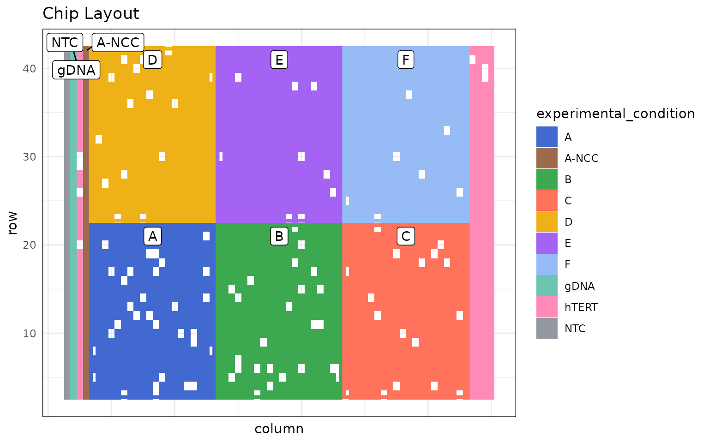
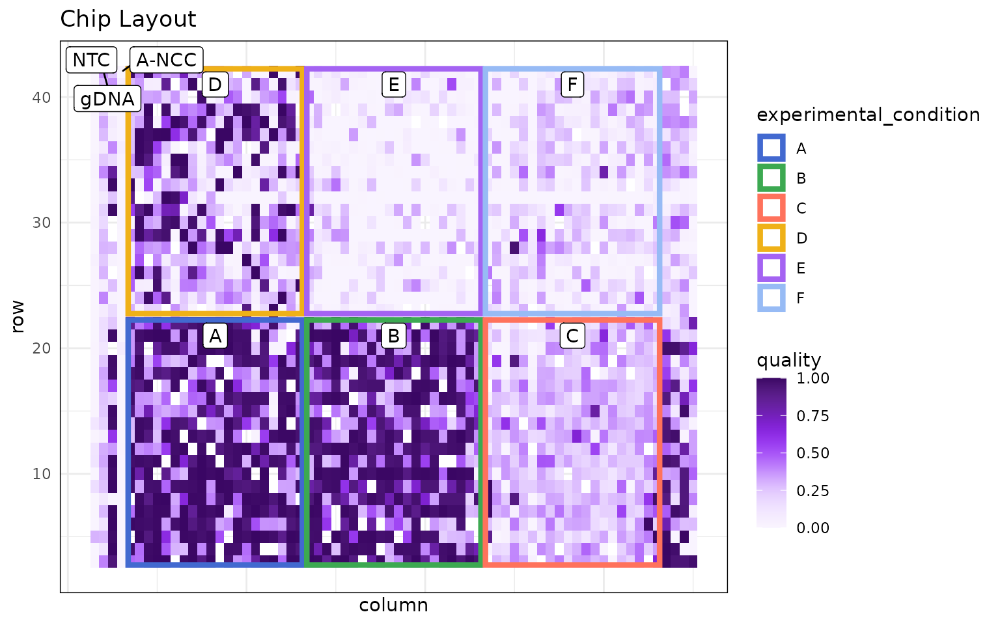
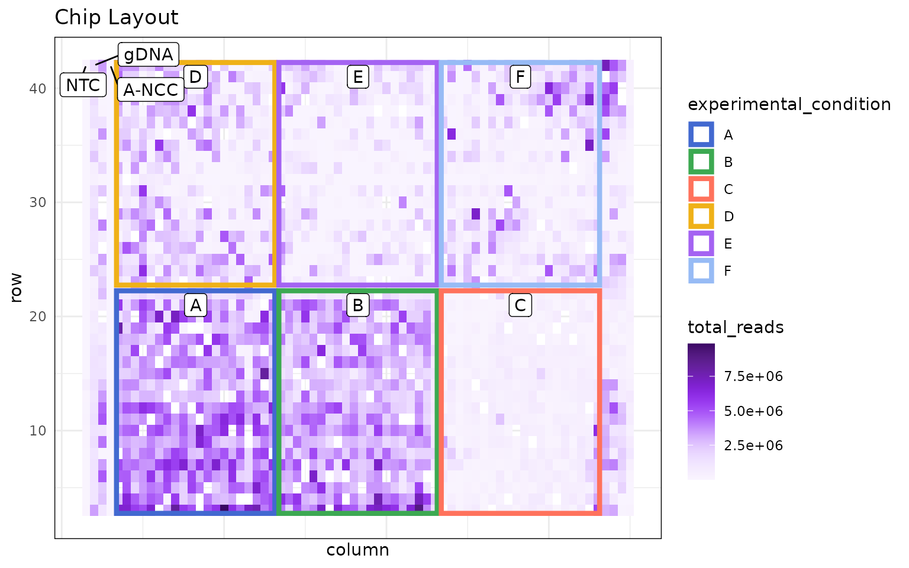
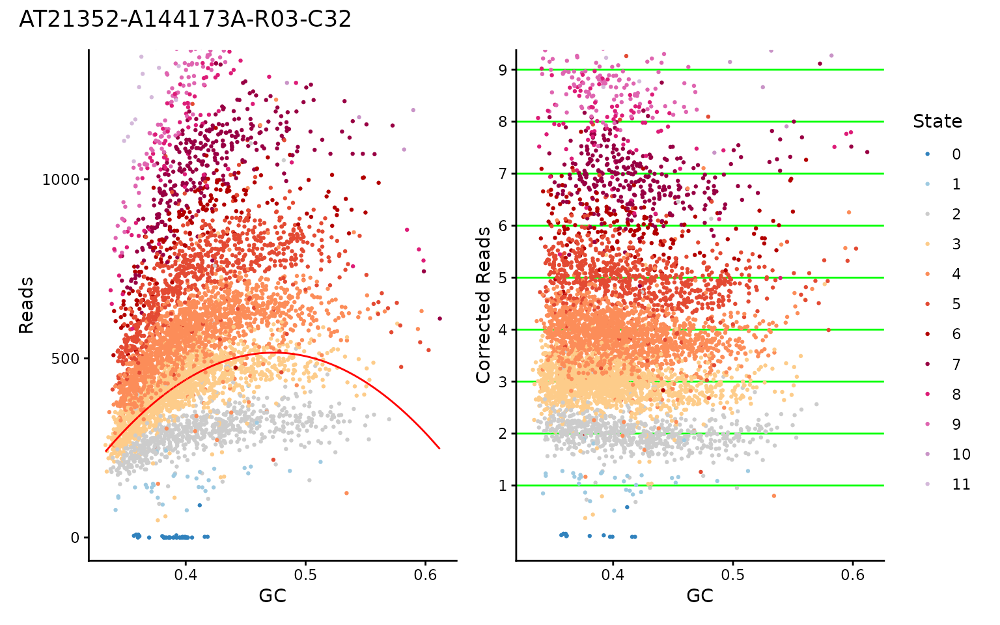
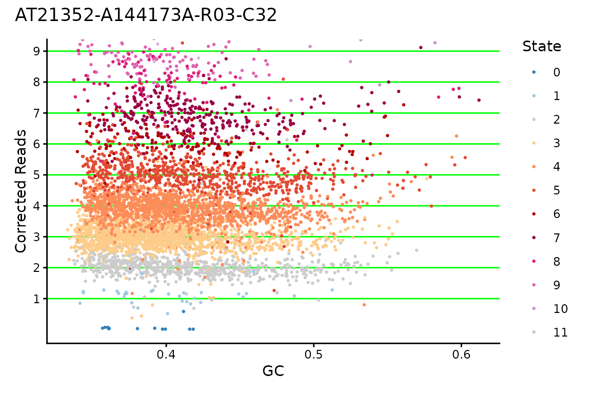
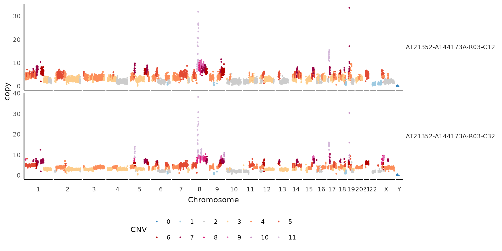
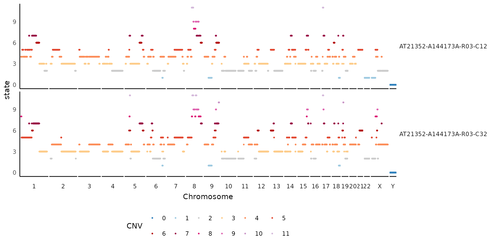
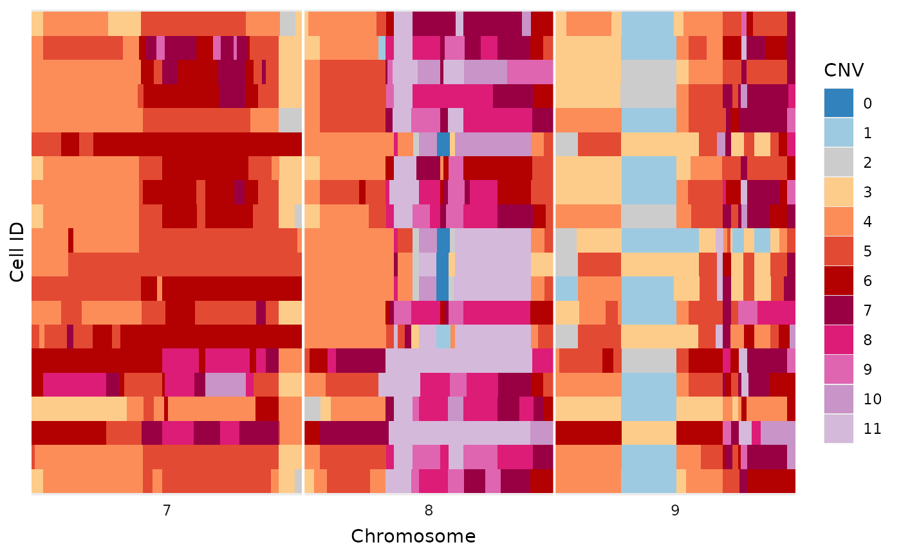

Most of the plots here related to exploring aspects of a DLP run to help learn how well it may have worked or not!
A good resource of exploring aspects of DLP are these confluence pages:
Chip Layout Plots
The first thing we usually want to check, is how the chip is laid out:
# just some example data from a recent run with lots of experimental conditions
ex_mets <- vroom::vroom(
"data/ex_metrics.tsv.gz",
show_col_types = FALSE
)
dlptools::plot_dlp_chip(ex_mets, "experimental_condition")
Then often we want to look for spatial effects across the chip.
Such as, quality:
dlptools::plot_dlp_chip(ex_mets, "quality")
or perhaps total reads:
dlptools::plot_dlp_chip(ex_mets, "total_reads")
GC Correction Plots
Another plot that can be useful is to look at the GC correction for a cell, to see if the values really fall on integers for CNs, or if maybe something seems off about the multiplier HMMcopy chose for the cell.
# standard reads table, really anything with GC, modal_curve, multiplier, and
# cell_id columns should work.
ex_reads <- vroom::vroom(
"data/example_full_reads.tsv.gz",
show_col_types = FALSE
)
dlptools::plot_gc(
ex_reads,
cellid = "AT21352-A144173A-R03-C32",
# plot_choice = "both" # the default option
)
Or you can just plot one:
dlptools::plot_gc(
ex_reads,
cellid = "AT21352-A144173A-R03-C32",
plot_choice = "corrected" # or plot_choice = "raw"
)
Cell Copy Profiles
Sometimes you want to show a plot of a cell, or handful of cells, with their copy values and the overlaid state calls.
The Signals package has plotCNprofile which has lots of features.
But if you want a quick and dirt dlptools version, you can do:
dlptools::plot_cell_cn_profile(
ex_reads,
cell_ids = unique(ex_reads$cell_id)[1:2],
# high copy numbers can obscure the plot, so you can set:
# pseduo_log_y = TRUE
# and that might help. Or see function help for more ideas
)
If needed, can also change what the y-axis is to other bin-based options:
dlptools::plot_cell_cn_profile(
ex_reads,
cell_ids = unique(ex_reads$cell_id)[1:2],
yaxis = "state"
)
Simplified Tile Plot
This plot is a simplified alternative to the methods described in the heatmaps vignette. There are no additions, like trees and annotations, but works for a variety of quick inspections.
dlptools::plot_read_bins_basic(
# just filtering to make the plot smaller for this demonstration
dplyr::filter(ex_reads, chr %in% c(7:9))
)
To help with plotting, a variety of commonly use color palettes are available:
# standard state colors
dlptools::CNV_COLOURS
#> 0 1 2 3 4 5 6 7
#> "#3182BD" "#9ECAE1" "#CCCCCC" "#FDCC8A" "#FC8D59" "#E34A33" "#B30000" "#980043"
#> 8 9 10 11+ 11
#> "#DD1C77" "#DF65B0" "#C994C7" "#D4B9DA" "#D4B9DA"
# typically used allele specific colors
dlptools::ASCN_COLORS
#> 0|0 1|0 1|1 2|0 2|1 3|0 2|2 3|1
#> "#3182BD" "#9ECAE1" "#CCCCCC" "#666666" "#FDCC8A" "#FEE2BC" "#FC8D59" "#FDC1A4"
#> 4|0 5 6 7 8 9 10 11
#> "#FB590E" "#E34A33" "#B30000" "#980043" "#DD1C77" "#DF65B0" "#C994C7" "#D4B9DA"
#> 11+
#> "#D4B9DA"
# typically used phase colors
dlptools::ASCN_PHASE_COLORS
#> A-Hom B-Hom A-Gained B-Gained Balanced
#> "#56941E" "#471871" "#94C773" "#7B52AE" "#d5d5d4"
# typically BAF scale is a circlize::colorRamp2 spanning
# standard green-grey-purple used for ASCN colors
# dlptools::BAF_COLORS